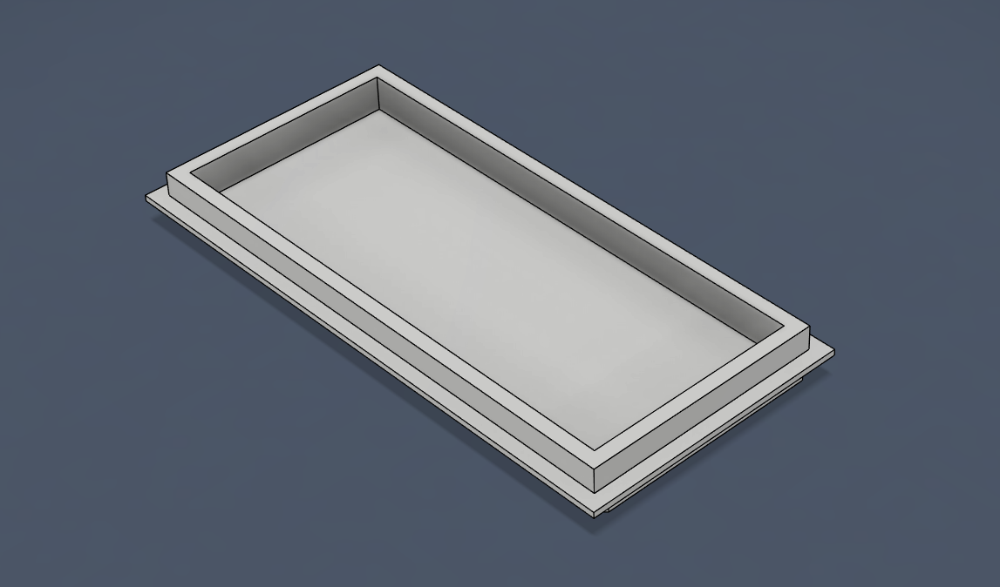
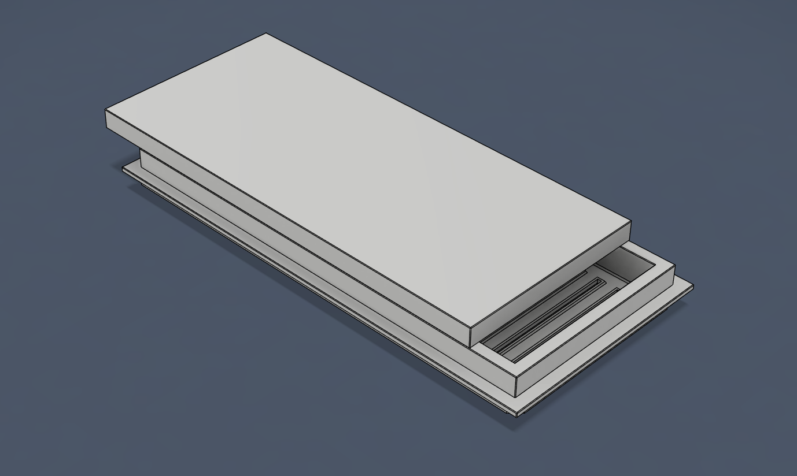
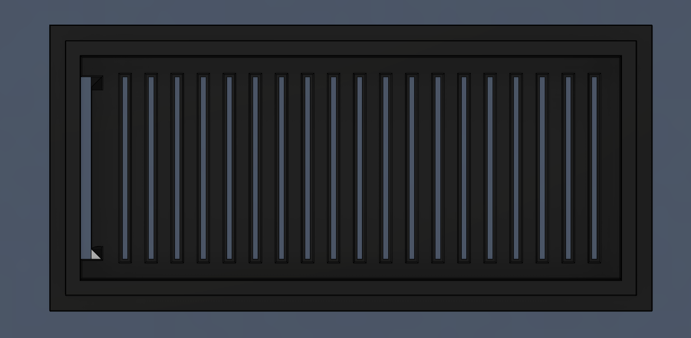
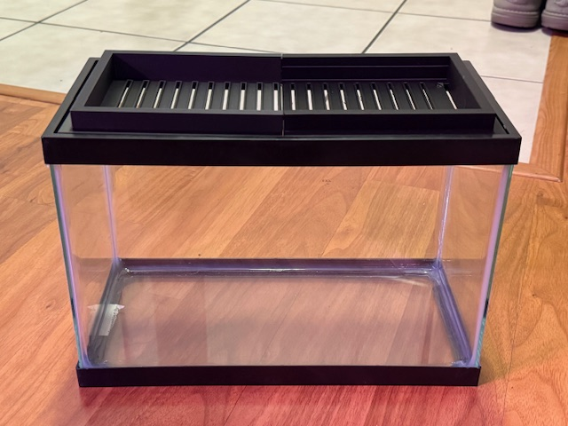
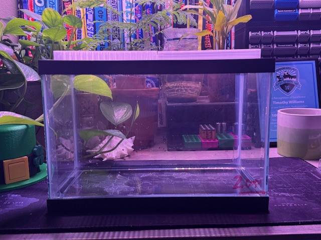
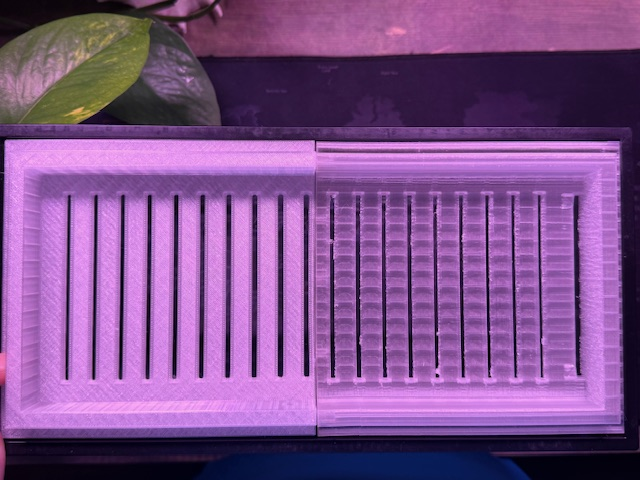
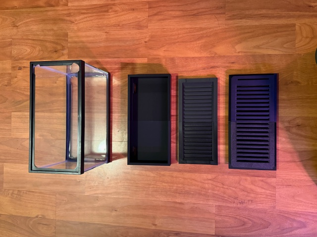
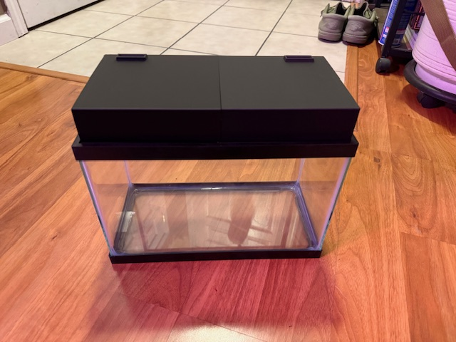
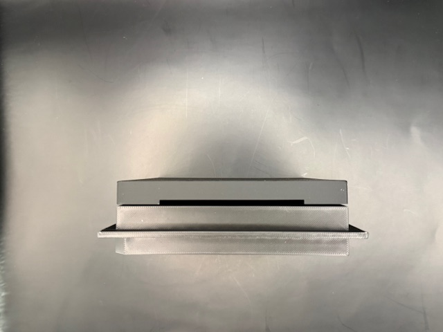
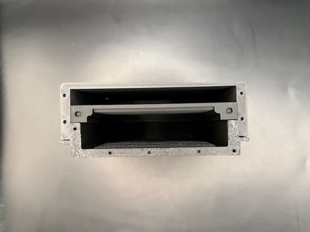

SIP: Project C2 — Capillary Canopy
Completed Student Innovation Project • SIP311 • SIP408 • SIP409 • Testing • Revisions
Innovation Claim
Claim: Project C2 is innovative because it uses 3D-printed lid geometry rather than external equipment to create repeatable, tunable microclimates in small tanks. The design combines condensation routing, vent control, and an optional reservoir-fed wick system into a single modular lid manufactured from Fusion 360 models on a Bambu P1P.
Project Description
Project C2 explores how passive environmental control can be built directly into a terrarium lid. The goal is to use geometry, material behavior, and controlled water movement to support stable microclimates with less maintenance. The project focuses on sealed rim fitment, condensation routing, wick-fed moisture transfer, and biome-specific tuning for different enclosure conditions.
Project Outcome
Project C2: Capillary Canopy was completed and passed as my Student Innovation Project. The final prototype demonstrated that a fitted 3D-printed terrarium lid could influence enclosure humidity and moisture behavior through passive geometry.
The project progressed through repeated CAD revisions, physical prototypes, fitment checks, humidity testing, evaporation testing, and evaluation of failed water-transfer concepts. The completed project establishes a functional prototype, documents its current limitations, and provides a foundation for future development.
Status Updates
- March 4: Prototype V1 printed and test setup completed
- March 6: Adjustments from V1 to V2 included internal spacing, gaps, and vent alignment
- March 7: Prototype V2 printed and test setup completed
- March 18: Adjustments from V2 included outer cap fit and vent placement
- March 28: V2 full print setup with water to assess evaporation
- April 3: V2 minor adjustments to final fit
- April 6: V3 printed and final test for arid lid
- April 10: Arid lid V3 failed to transfer water
- April 14: Added inner lid to Arid Lid V4
- April 20: Arid lid V4 became “The Lid” V4
- April 26: “The Lid” V4 printed and tested
- April 29: Two-week water test started
- May 14: Two-week water test completed
- May 16: Final specifications completed
Prototype Progress Timeline
Each milestone below documents design changes, observations, and next steps.
Prototype Revision 1 — Initial Fit Test

Inner lid that fits directly to the commercial tank, used to check overall dimensions and tank fit.
This step focused on basic dimensions, fitment, and confirming that the lid seated correctly against the tank rim. The goal at this stage was not full environmental performance, but making sure the part physically worked before refining internal details.
- Focus: rim fit and overall dimensions
- Result: basic fit confirmed
- Issue found: internal geometry was still too simple for reliable moisture routing
- Next step: make it less “Tupperware” and add more functional internal features
Prototype Revision 2 — Internal Geometry Update

Added internal cap to the prototype with revised internal features.

V3 lips and water path were modified.
This revision introduced changes intended to improve moisture movement and direct condensation away from the front viewing area. The focus shifted from basic fit to functional environmental control.
- Focus: condensation routing and internal channel behavior
- Result: improved structure, but moisture flow still underperformed in V2
- Issue found: expected passive redistribution was weaker than planned
- Next step: continue refining internal slopes and return paths, and add lips and guides for V3
Fitment and Seal

Fit and seal check against the tank rim.
A reliable fit is critical because the lid must control evaporation and internal humidity before any moisture-routing features can work consistently. I had no major fit issues after V1 and became confident that the lid components would fit the target tank consistently.
Spring Break Testing — Observation Phase


Prototype observed over an extended period to evaluate moisture behavior.
Over spring break, the system was left alone longer to determine whether moisture movement would improve naturally as the enclosure stabilized. That did not happen. Instead, moisture clouded the glass and created an environment with limited airflow and no functional ventilation, which showed that additional geometry changes were still needed.
- Focus: passive moisture redistribution over time
- Result: system remained stable, but flow improvement was limited
- Issue found: moisture was not moving as aggressively as expected
- Next step: redesign internal surfaces to encourage better flow, moisture distribution, and collection
Version 4.0




Version 4.0 represents the completed SIP prototype. It demonstrates the core concept, fits the tank properly, and supports stable humidity over time. While the design still has room for refinement, this version confirms that the lid structure can help maintain a controlled terrarium environment.
- Focus: integrated system performance
- Result: functional prototype with a clear direction for refinement
- Issue found: moisture management still requires tuning
- Outcome: completed and accepted as the final SIP prototype
Testing and Observations
Performance notes from fitment, evaporation, and passive water-movement testing.
The humidity tests compared how the Capillary Canopy prototype performed with different moisture setups inside a 2.5-gallon tank. Both tests used a hygrometer, LED lighting only, and a temperature range of approximately 72–78 degrees. Test A used three cups of water. Test B used three cups of water with six cups of substrate.
Humidity Test A
| Day | Humidity |
|---|---|
| Day 1 | 82% |
| Day 2 | 88% |
| Day 3 | 91% |
| Day 4 | 93% |
| Day 5 | 94% |
| Day 6 | 95% |
| Day 7 | 95% |
| Day 8 | 96% |
| Day 9 | 96% |
| Day 10 | 95% |
| Day 11 | 95% |
| Day 12 | 94% |
| Day 13 | 94% |
| Day 14 | 93% |
Humidity Test B
| Day | Humidity |
|---|---|
| Day 1 | 72% |
| Day 2 | 78% |
| Day 3 | 82% |
| Day 4 | 85% |
| Day 5 | 87% |
| Day 6 | 88% |
| Day 7 | 88% |
| Day 8 | 87% |
| Day 9 | 86% |
| Day 10 | 85% |
| Day 11 | 83% |
| Day 12 | 81% |
| Day 13 | 79% |
| Day 14 | 77% |
Appendix A


Final Status and Future Development
Project C2 has been completed and passed as my Student Innovation Project. Future development may continue outside the original SIP requirements.
- Continue long-term environmental testing
- Refine internal moisture-routing geometry
- Evaluate additional enclosure sizes and biome configurations
- Reduce print time and material use
- Explore integration with Project Gaia monitoring systems
SIP Brief
Boards Connection
Project C2 supports Digital Maker and Fabrication Objective 1 through its patent-ready prototype development and Objective 6 through its iterative Agile and MVP process.